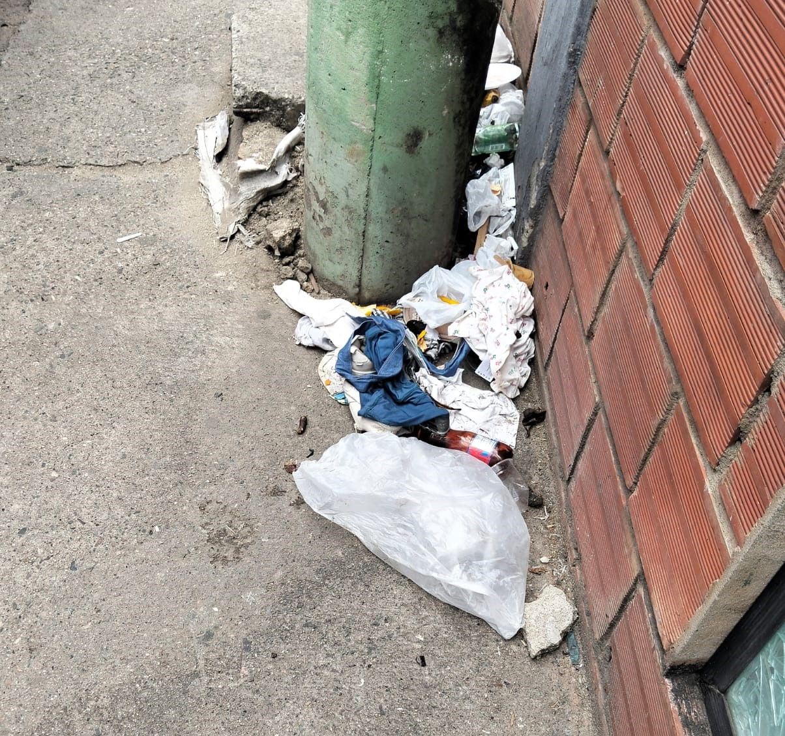

Actualmente en Nuestra Institución uno de los principales problemas ambientales es la presencia de residuos sólidos en todas las areás en general de nuestra querida institución.
Una situación en especial es la poca atención que se le brindan a dichos residuos sólidos y como estos no se separan correctamente para posteriormente ser reusados o desechados adecuadamente.
Es por esto que como estudiantes líderes responsables de nuestra institución empezamos a llevar a cabo acciones para mejorar dicha escasa gestión de residuos.

Consiste en sesibilizar a los estudiantes de nuestra institución de una manera nueva, original y creativa que genere el impacto correcto que estamos buscando por esto decidimos realizar una encuesta para ver si el tema les es de interés a los estudiantes y si se comprometerían a aportar su granito de arena al proyecto.
Sorprendentemente recibimos respuestas muy positivas de los más de 150 estudiantes encuestados, lo cual nos motivó a seguir adelante.

Después de analizar dichos resultados, recopilamos lo fundamental y lo explicamos en un PDF.
Dichos resultados fueron un avance clave y los adjuntamos a continuación:
Una vez identificada la problematica y con compañeros de la institución dipuestos a brindar apoyo, iniciamos nuestra búsqueda de solución.
En donde tuvimos la idea de crear ésta página, donde explicamos la importancia de la protección ambiental y el como estamos descuidando nuestro hogar; además nosotros mismos nos encargamos de buscar, identificar y capturar imagenes de los distintos tipos de residuos sólidos existentes. De tal manera que usamos esas imagenes y esa práctica crear un módelo de identificación de residuos. El cual identifica dichos residuos y, con apoyo de la Micro-Bit nos envía un mensaje con el nombre de el grupo al que pertenece el residuo clásificado.
Continua navegando y aprendiendo del tema, al llegar al final podrás escontrar el módelo que hemos creado el cual te ayudará a identificar los residuos correctamente.